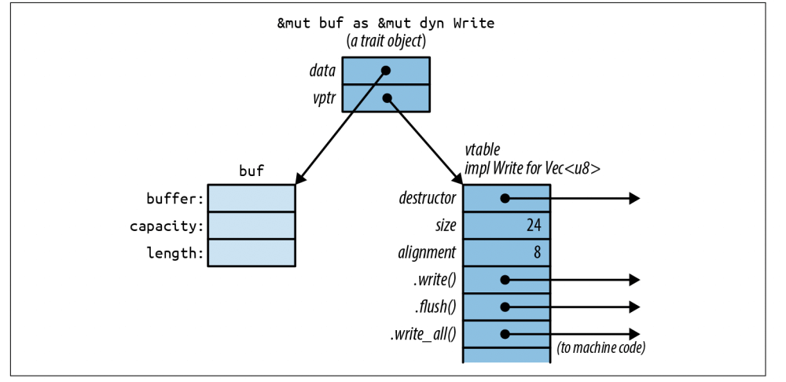
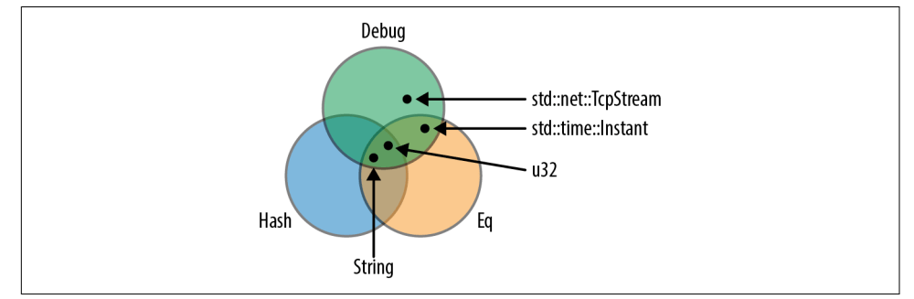

【Rust】Trait和泛型
编程中可能经常遇到要用相同的逻辑处理不同的类型，即使这个类型是还没出世的自定义类型。这种能力对于 Rust 来说并不新鲜，它被称为多态性，诞生于 1970 年代的编程语言技术，到现在为止仍然普遍。Rust 支持具有两个相关特性的多态性：Trait 和 泛型。
Trait 是 Rust 对接口或抽象基类的对照实现，它们看起来就像 Java 或 C# 中的接口：
1 | trait Write { |
File，TcpStream 以及 Vec<u8> 都实现了 std::io::Write，这3个类型都提供了 .write()，.flush() 等等方法，我们可以使用 write 方法而不用关心它的实际类型：
1 | use std::io::Write; |
&mut dyn Write 的意思是任何实现了 Write 的可变引用，我们可以调用 say_hello 并且给他传递这样一个引用：
1 | use std::fs::File; |
泛型函数就像 C++ 中模板函数，一个泛型函数或者类型可以用于许多不同类型的值：
1 | /// Given two values, pick whichever one is less. |
<T: Ord> 意思是 T 类型必须实现 Ord，这称为边界，因为它设置了 T 可能是哪些类型，编译器为实际使用的每种类型 T 生成自定义机器代码。
使用 Trait
Trait 代表了一种能力，这个类型能做哪些事情，例如：
-
实现
std::io::Write意味着可以调用.write()方法写入字节等； -
实现
std::iter::Iterator可以产生一个序列值； -
实现
std::clone::Clone可以在内存中clone自身； -
实现
std::fmt::Debug可以使用{:?}打印；
这 4 个 Trait 只是标准库中的一部分，许多标准类型都实现了他们，例如：std::fs::File 实现 Write，Range<i32>(0..10) 实现了 Iterator，有很多类型都实现了 Clone 和 Debug。
关于 Trait 方法有一个不寻常的规则：Trait 本身必须在范围内。否则，它的所有方法都会被隐藏：
1 | let mut buf: Vec<u8> = vec![]; |
正常情况下，编译器会提示我们需要导入 std::io::Write：
1 | use std::io::Write; |
之所以要这样做，是因为了避免命名冲突，需要导入计划使用的 Trait，因为我们可能为类型实现了多种 Trait，它们都相同的方法名。但如果我们需要导入这两个名称冲突的方法，就需要使用完全限定方法调用，而 Clone 和 Iterator 能正常使用的原因是它们是预导入的。
Trait 对象
在 Rust 中，一个变量的大小必须在编译时就能确定，而 Trait 可以被任何类型实现，所以它们的大小无法确认，类似下面的代码会编译失败：
1 | use std::io::Write; |
然而一个引用的大小时确定的，我们可以获取 Trait 的引用：
1 | use std::io::Write; |
Trait 类型的引用，如 writer，称为 Trait 对象。 Trait 对象指向某个值，它有生命周期，可以是可变引用或共享引用。Trait 对象的不同之处在于，它包含了一些关于所指对象类型的额外信息，当你调用 writer.write(data) 时，Rust 需要根据 *writer 的类型动态调用正确的 write 方法。Rust 不允许直接查询类型信息，也不支持从 Trait 对象向下转换，&mut dyn 不能转换为 Vec<u8> 这样的具体类型。
在内存中，Trait 对象是一个胖指针，由一个指向值的指针和一个指向拥有该值类型方法表的指针组成，因此，每个Trait对象占用两个机器字，下图所示：

C++ 也有这种运行时类型信息，它被称为虚拟表，vtable 是 Rust 的私有实现细节，这些是不可以直接访问的字段和数据结构。当调用Trait对象的方法时语言自动使用 vtable 去决定使用哪个类型。
Rust 在需要时会自动将普通引用转换为 Trait 对象， 这就是为什么我们能够在这个例子中将 &mut local_file 传递给 say_hello：
1 | let mut local_file = File::create("hello.txt")?; |
local_file 的类型是 &mut File，say_hello 函数的参数类型是 &mut dyn Write，由于 File 实现了 Write，所以允许自动转换。同样，Rust 也可以将 Box<File> 转换为 Box<dyn Write>：
1 | let w: Box<dyn Write> = Box::new(local_file); |
Box<dyn Write> 和 &mut dyn Write 一样，是一个胖指针：它包含 writer 本身和 vtable 的地址。其他指针类型也是如此，例如 Rc<dyn Write>。
泛型函数
首先来看一个普通函数和泛型函数的例子：
1 | fn say_hello(out: &mut dyn Write) // 普通函数 |
<W: Write> 预示着这个函数是泛型的，W 是一个类型参数，意味着在整个函数体中，类型 W 是实现了 Write 的类型。约定上，类型参数使用单个大写字母表示，而 W 实际代表哪种类型取决于泛型函数的使用方式：
1 | say_hello(&mut local_file)?; // calls say_hello::<File> |
当我们传递给 say_hello 函数 &mut local_file，Rust 就会为 say_hello::<File>() 类型的机器代码，当使用 &mut bytes 时，就会生成say_hello::<Vec<u8>>() 类型的代码。在这两种情况中，W 的类型都会由编译器自动推断，这叫做单态化（monomorphization）。
如果不嫌麻烦，可以显示写出 W 的类型：
1 | say_hello::<File>(&mut local_file)?; |
但是，如果你调用的泛型函数没有提供任何可供编译器进行类型推断的信息，就需要显示提供：
1 | // calling a generic method collect<C>() that takes no arguments |
有时候，一个类型可能需要具备多种能力，也就是它得实现多个 Trait，这个时候我们可以使用 + ：
1 | use std::hash::Hash; |

泛型函数也是可以拥有多个类型参数的，例如：
1 | /// Run a query on a large, partitioned data set. |
但是这样写会让函数的签名变得很长，看起来不是很顺眼，所以可以使用 where 关键字达到同样的效果，只是将 M 和 R 的边界移动到了后边，让函数签名看起来更加清晰而已：
1 | fn run_query<M, R>(data: &DataSet, map: M, reduce: R) -> Results |
泛型函数的参数有引用时，可能需要显示使用生命周期参数，这种情况需要把生命周期写在最前面：
1 | /// Return a reference to the point in `candidates` that's |
生命周期参数不会影响函数的机器代码生成，只有不同的类型 P 才会导致编译器生成不同的 nearest 版本。
即使结构体不是泛型，它的方法也可以是泛型的：
1 | impl PancakeStack { |
类型别名也可以是泛型：
1 | type PancakeResult<T> = Result<T, PancakeError>; |
泛型 or Trait
Trait 解决的问题是像什么，它能代表一类对象，这一类对象都有相同的行为；而泛型解决的问题是解决重复编码，更像是一个代码模板，泛型类型可以使用 Trait 作为边界。
对于代码体积来说，由于泛型更像是代码模板，所以在编译时更具会对不同类型生成真正的代码，代码体积会增大，但是运行速度会更快，而 Trait 对象只有在实际运行时才能确定其真正的类型。
定义实现 Trait
定义 Trait 相对比较简单，有两个必须的信息，名称和方法签名列表：
1 | /// A trait for characters, items, and scenery - |
如果要为类型实现 Trait，需要使用 impl TraitName for Type 的语法，这里只包含 Type 为 TraitName 实现的方法：
1 | impl Visible for Broom { |
Trait 默认方法
Trait 中可以不止包含方法签名列表，也可以包含方法的实现，如果类型没有重新实现方法，在调用的时候，会选择 Trait 的默认实现：
1 | trait Write { |
Write 默认实现了 write_all 方法，在为自定义类型实现时，如果没有重新实现，就会选择这个 write_all 。
Trait 实现限制
只要类型或者 Trait 是当前 crate 引入的，就可以：
-
为其他任何类型实现当前
crate中的Trait； -
或者为当前
crate中的类型实现任何Trait；
例如，我们可以为标准库 char 类型实现我们自定义的 IsEmoji，只要 IsEmoji 在作用域之内就可以使用：
1 | trait IsEmoji { |
方法扩展
还可以对某类已存在类型一次性扩展多个方法，通过一个 泛型impl块，这里，为所有实现了 Write 的类型添加 write_html 方法：
1 | use std::io::{self, Write}; |
例如，标准库中为所有实现了 From 的类型自动实现了 Into：
1 |
|
要注意的是，当实现一个 Trait 的时候，Trait 或者类型必须要有是当前 crate 中，这称之为孤儿原则，它确保 Trait 实现是唯一的，所以不能为 u8 实现 Write，因为它两都是标准库中的。
Trait 中的 Self
在 Trait 的方法定义中可以使用 Self 关键字，例如：
1 | pub trait Spliceable { |
在第一个 impl 中，Self 表示 CherryTree，在第二个 impl 中，Self 表示 Mammoth，而且 self 和 other 的类型必须匹配。但是如果 Trait 中包含了 Self，就和 Trait 对象不兼容，因为在编译时，Rust 不能确定 Trait 对象背后的实际类型，所以下面的代码会编译失败，因为 Rust 不知道 left 和 right 是否是相同类型：
1 | // error: the trait `Spliceable` cannot be made into an object |
如果我们想要 splice 函数能够处理兼容处理不同类型，我们可以这样做：
1 | pub trait MegaSpliceable { |
子Trait
Trait 之间可以扩展，例如：
1 | trait Creature: Visible { |
这样每个想实现 Creature 的类型就必须实现 Visible，我们将 Creature 称作 Visible 的 子 Trait，或者将 Visible 称作 Creature 的 父Trait，但是子 Trait 不能继承 父Trait 的关联项。另外如果想调用 Trait 的方法，依然需要每个 Trait 都在作用域内。
其实 trait Creature: Visible 只是下面的简写：
1 | trait Creature where Self: Visible { |
Trait 的关联函数
大多数面向对象语言中，接口是不可以包含静态方法或者构造函数的，但是 Rust 的 Trait 可以包含静态类型方法：
1 | trait StringSet { |
new 和 from_slice 没有将 self 作为第一个参数，它们就像构造函数。每个实现 StringSet 的类型必须实现关联的静态方法。在非泛型代码中，这些函数可以使用 :: 调用=类型关联函数：
1 | // Create sets of two hypothetical types that impl StringSet: |
在泛型代码中也是一样的，有区别的是，类型通常是一个类型变量，例如，S::new()：
1 | /// Return the set of words in `document` that aren't in `wordlist`. |
Trait 对象不支持类型关联的函数，如果你想使用 &dyn StringSet，即 Trait 对象，你必须改变 Trait，给那些没有将 self 作为参数的关联函数添加边界 where Self: Sized：
1 | trait StringSet { |
这个边界告诉Rust，Trait 对象可以不支持这个特定的关联函数。有了这些补充，虽然 StringSet 的 Trait对象仍然不支持new或from_slice，但可以创建它们并使用它们来调用.contains()和.add()。
完全限定调用
当调用 "hello".to_string() 的时候，Rust 会根据方法查找算法进行方法查找，这里的 to_string() 实际上引用到了 ToString Trait 的方法。下面的四种方法是等价的：
1 | "hello".to_string(); |
其中最后一种称之为完全限定语法，通过这个语法，可以明确知道调用哪个方法，这在下面这些场景中非常有用：
-
当两个方法有相同的名称时，调用就会有歧义，可以通过限定类型或者指定
Trait来具体说明：1
2
3
4outlaw.draw(); // 不知道调用哪个？
Visible::draw(&outlaw); // ok: draw on screen
HasPistol::draw(&outlaw); // ok: corral -
当
self参数类型不能推断时：1
2
3
4let zero = 0; // type unspecified; could be `i8`, `u8`, ...
zero.abs(); // error: can't call method `abs`
// on ambiguous numeric type
i64::abs(zero); // ok -
当使用函数本身作为函数值时：
1
2
3
4let words: Vec<String> =
line.split_whitespace() // iterator produces &str values
.map(ToString::to_string) // ok
.collect(); -
在宏中调用
Trait方法时；
Trait 关联类型
Trait 内部也可以定义类型，用于类型之间相互交互，例如 std::iter::Iterator 和 std::ops::Mul
1 | pub trait Iterator { |
这其中的 type Item; 是一个关联类型，每个实现 Iterator 的类型必须声明 Item 的具体类型，next 的返回值用了 Item 关联类型，这里写作 Self::Item 表明他不是一个普通类型，而是和每个实现 Iterator 的类型相关。
我们可以看到 std::env::Args 的实现，在这里的实现中，Item 的类型是 String：
1 | impl Iterator for Args { |
泛型代码也可以使用 Trait 的关联类型，在 collect_into_vector 的返回值中，我们必须使用 Vec<I::Item> 而不能是 Vec<I：
1 | /// Loop over an iterator, storing the values in a new vector. |
我们还可以指定关联类型的边界，如果不指定，我们可能会遇到问题，我们想打印出 Iterator 的每个值，但是编译器会提示我们 <I as Iterator>::Item 没有实现 Debug：
1 | /// Print out all the values produced by an iterator |
鉴于此错误，我们要么指定 <I as Iterator>::Item 的边界，要么指定它的具体类型：
1 | /// Print out all the values produced by an iterator |
或者
1 | /// Print out all the values produced by an iterator |
后面这个语法可用于任何 Trait 名称可以使用的地方被使用，包括 Trait 对象类型：
1 | fn dump(iter: &mut dyn Iterator<Item=String>) { |
泛型 Trait
Trait 也可以是泛型的，例如std::ops::Mul：
1 | pub trait Mul<Rhs = Self> { |
这里的类型参数和在结构体或函数上的意思是一样的：Mul 是泛型 Trait，它的实例 Mul<f64>、Mul<String>、Mul<Size> 等都是不同的 Trait。
之前说我们实现 Trait 时，Trait 或者类型必须要有一个是当前 crate 中的。假设我们有自己的结构体 Number，我们完全可以为 f64 实现 Mul<Number>，以支持 f64 * Number，即使 Mul 和 f64 不是我们 crate 的，但是 Mul<Number> 是我们自己定义的：
1 |
|
impl Trait
许多泛型类型的组合可能会使代码变得混乱，例如，使用标准库几个迭代器会使代码的返回类型变得异常复杂：
1 | use std::iter; |
我们可以使用 Trait 对象替换这个看起来很复杂的返回值类型：
1 | fn cyclical_zip(v: Vec<u8>, u: Vec<u8>) -> Box<dyn Iterator<Item=u8>> { |
但是这个返回值每次都要在堆中重新申请内存，也是有代价的。因此，Rust 专门为这种情况提供了 impl Trait 这种语法，只指定它实现的一个或多个Trait，而无需动态调度或堆分配：
1 | fn cyclical_zip(v: Vec<u8>, u: Vec<u8>) -> impl Iterator<Item = u8> { |
但是我们不能通过这个实现在运行时动态返回不同类型的函数，错误是很明显的，Rust 需要在编译的时候就知道返回值的大小，并且分配大小正确的空间，这里返回三个不同类型，Rust 就不知道怎么做了：
查看错误示例
1 |
|
正确的修改方法是：
查看正确示例
1 |
|
更多可以查看 使用 dyn 返回 trait。
需要注意的是，Rust 不允许 Trait 方法使用 impl Trait 返回值，只有自由函数和与类型关联的函数才能使用 impl Trait 返回。impl Trait 也可以用在接受泛型参数的函数中。例如，下面两个函数的实现等价：
1 | fn print<T: Display>(val: T) { |
有一个重要的例外，使用泛型函数允许函数调用者声明泛型参数类型，例如：print::<i32>(42)，但是当使用 impl Trait 是不允许的。
每个 impl Trait 参数都分配有自己的匿名类型参数，因此参数是 impl Trait 仅限于简单的泛型函数，类型和参数之间没有关系的。
关联常量
像结构体和枚举一样，Trait 也可以有关联的常量，例如：
1 | trait Greet { |
关联的常量可以只声明而不用给值：
1 | trait Float { |
然后在实现的时候再定义这些值：
1 | impl Float for f32 { |
这允许我们定义这样的泛型函数，以使用这些常量：
1 | fn add_one<T: Float + Add<Output=T>>(value: T) -> T { |
请注意，关联常量不能与 Trait 对象一起使用，因为编译器依赖于有关实现的类型信息以便在编译时选择正确的值。即使是一个根本没有行为的简单 Trait，比如 Float，也可以提供足够的关于类型的信息，结合一些运算符，来实现常见的数学函数，比如 Fibonacci：
1 | fn fib<T: Float + Add<Output=T>>(n: usize) -> T { |
步步为营
假设我们写了一个函数用于求和两个 &[i64] 的和，代码可能看起来是这个样子的，代码也可以正常运行：
1 | fn dot(v1: &[i64], v2: &[i64]) -> i64 { |
现在假设我们又想实现两个 &[f64] 的和，我们可以第一步想到的是改成泛型函数：
1 | fn dot<N>(v1: &[N], v2: &[N]) -> N { |
但这肯定不定，类型 N 必须支持 + 和 * 运算。另外由于 0 是整数，不是浮点数，当 N 代表 f64 是依然不对，所以我们可以改成这个样子，对 N 进行边界限定：
1 | use std::ops::{Add, Mul}; |
由于看起来很丑陋，所以我们对它进行美化，但还是编译不过：
1 | use std::ops::{Add, Mul}; |
因为 &v1[N] 没有实现 Copy，v1[i] 会转移所有权：
error[E0508]: cannot move out of type `[N]`, a non-copy slice
--> src/main.rs:11:25
|
11 | total = total + v1[i] * v2[i];
| ^^^^^
| |
| cannot move out of here
| move occurs because `v1[_]` has type `N`, which does not implement the `Copy` trait
error[E0508]: cannot move out of type `[N]`, a non-copy slice
--> src/main.rs:11:33
|
11 | total = total + v1[i] * v2[i];
| ^^^^^
| |
| cannot move out of here
| move occurs because `v2[_]` has type `N`, which does not implement the `Copy` trait
所以我们接着改，这次改对了：
1 |
|
虽然结局看起来不错，但是我们是跟着编译器提示把 N 的边界给找出来。就这个问题而言，我们可以使用 num 这个 crate，看起来很简洁：
1 | use num::Num; |
注意事项
Rust 目前还不支持在 trait 里使用 impl trait 做返回值：
1 | pub trait ImplTrait { |